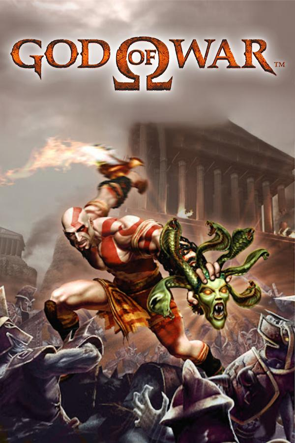
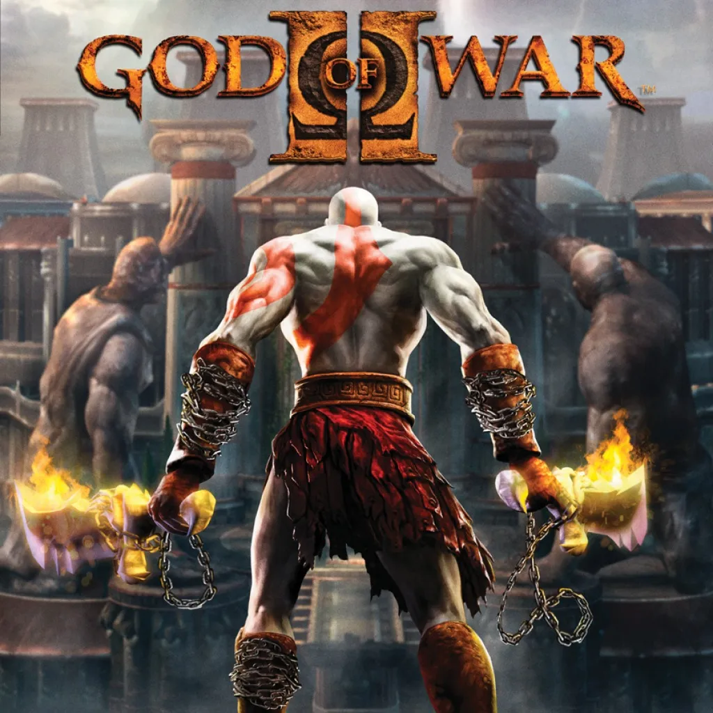

PlayStation 2 · 2005
God of War
O início da vingança de Kratos contra Ares.
A jornada começa no Olimpo
Escolha sua batalha e prepare o jogo para abrir no PCSX2.
Biblioteca

PlayStation 2 · 2005
O início da vingança de Kratos contra Ares.

PlayStation 2 · 2007
Desafie os deuses e mude o destino do Olimpo.
Preparar jogo
Escolha um arquivo de jogo para continuar.
No navegador, abra o arquivo manualmente pelo PCSX2; a abertura automática funciona no launcher desktop. A BIOS deve ser obtida legalmente e configurada no PCSX2.
Os comandos são definidos no PCSX2 em Settings > Controllers. Use a tabela como referência inicial para o controle padrão:
ps2-bios-all-bios e escolha uma BIOS compatível com sua região.Esta página organiza o acesso; as opções de emulação são aplicadas dentro do aplicativo PCSX2.